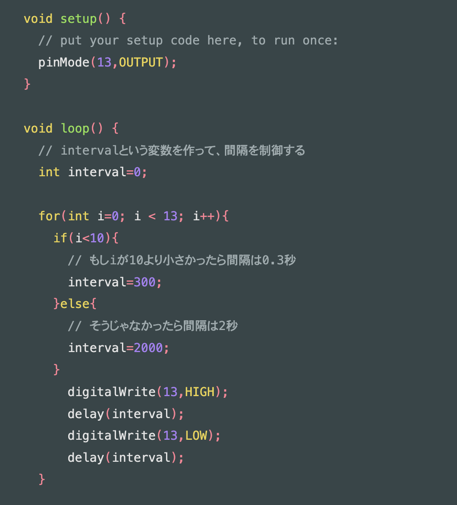

メモ
- マイコン（授業で使うやつ）→Arduino UNO
- Wifiやbluetooth機能付きの代表―ESP32
- M5stack―ディスプレイ付き
- Sony-カメラモジュールや拡張機能が充実
プログラム
{}で括って内容を表し、一項目ごとに;で区切る。条件付けはif文を使う。Void setup→起動時の動きを設定。
Void loop 起動後、同じ動きを繰り返す。
intは整数。
デジタルは０・１の世界/アナログは連続した数値
Arduino 日本語リファレンス（外部サイト） 独学プログラマーのプログラミングノート（外部サイト）
練習１：Lチカ（LEDを光らせる）
- LED：5V（過電流防ぐため、何ボルトかに注意）
LEDの足は長い方が＋（アノード）、短い方がー（カソード） - Void setup→pinMode(13, output) ＝マイコンの13番ピンから出力する
- digitalWrite(13,HIGH); もしくはdigitalWrite(13,LOW);
＝HIGHは電源ON, LOWは電源OFFの意味 - delay(500); =delayは待ち時間、（）の中は１＝0.001秒


練習２：明るさセンサー
- CdSセル：光センサー。光の強さに応じて電気抵抗が低下する。人の目の特性に近く、緑色の光の感度が高いので明るさセンサーに用いられる。暗いとセンサーの抵抗値が大きくなり、明るいところに置くと抵抗値が低くなる性質を持っています。
- Serial.begin(9600); ＝シリアルモニタを使う
- int val=0; →読み取った値を格納する変数
- val=analogRead(1); アナログピンから数値を読み取る。（）内でピンを指定。この場合A1のピンを使う。
- Serial.println(val); printlnでシリアルモニタに数値を表示
練習３：LED点灯と明るさセンサーを合体
- 暗いとLEDが光るようにプログラムする。
- 「暗い・明るいと〜」の条件はif文を使う。
次回までの課題
正の感情
- 嬉しい：友達とばったり会った時、美味しいご飯を食べる時、疲れてようやく寝られる時、仕事が終わった時、
- 楽しい：友達とおしゃべりするとき、
- テンションが上がる：ノリノリの音楽を聞いた時、ジェットコースターに乗る時、音ゲーをやる時、クライムアクションゲームをやる時
- 清々しい：海辺を散歩する時、風に当たった時、ビールを飲んだ時、ゲームで鹿狩りした時、勝負事に勝った時
- 穏やか：布団にくるまっている時、春・秋に公園を散歩する時
負の感情
- 萎える：組んでいた予定が狂った時、他人からネガティブな言動を浴びた時、忘れ物をした時、用事をやろうとして母親から電話がかかってきた時、家族・親族が揉めた時
- 腹が立つ：大学の対応が遅い時、ひたすら怒られた時、ダメ出しされた時、組んでいた予定を相手に崩されたとき、駅構内や通路で前の人がゆっくり歩いている時、同伴者が優柔不断なとき
- 悲しい：ひたすら怒られた時、ダメ出しされた時
- つまらない：興味のない話を長々と聞くとき、やることがないのに時間が余った時、
- 焦る：想定していなかったことを急に/沢山頼まれた時、同伴者が思いの外のんびりしているとき、駅構内や通路で前の人がゆっくり歩いている時
- 気持ち悪い：虫を見た時、あまり綺麗でない場所（渋谷のセンター街とか）を歩いた時、昔の嫌な思い出を思い出した時、体調が悪い時